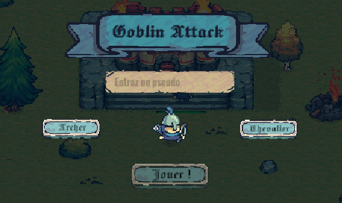
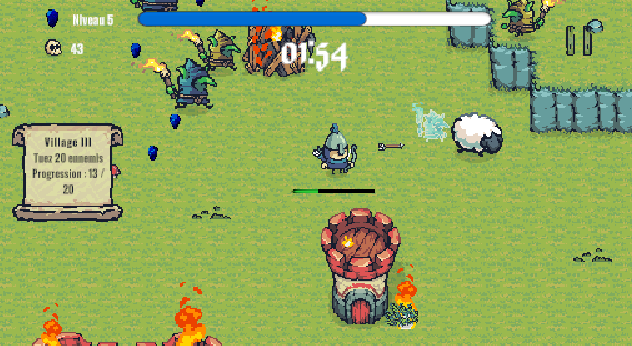
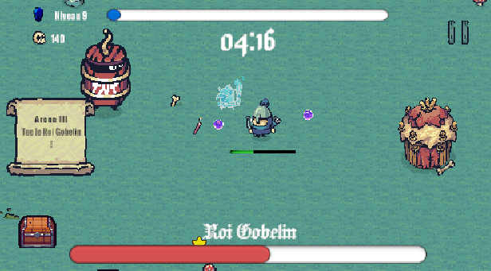
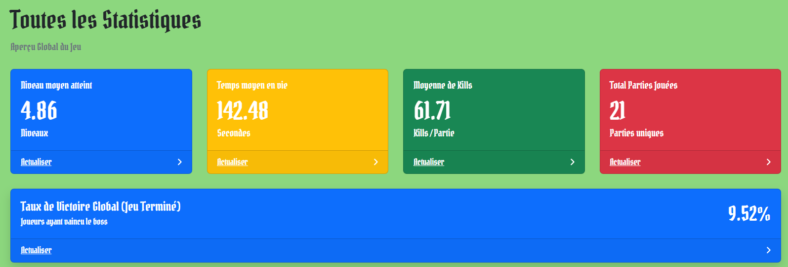
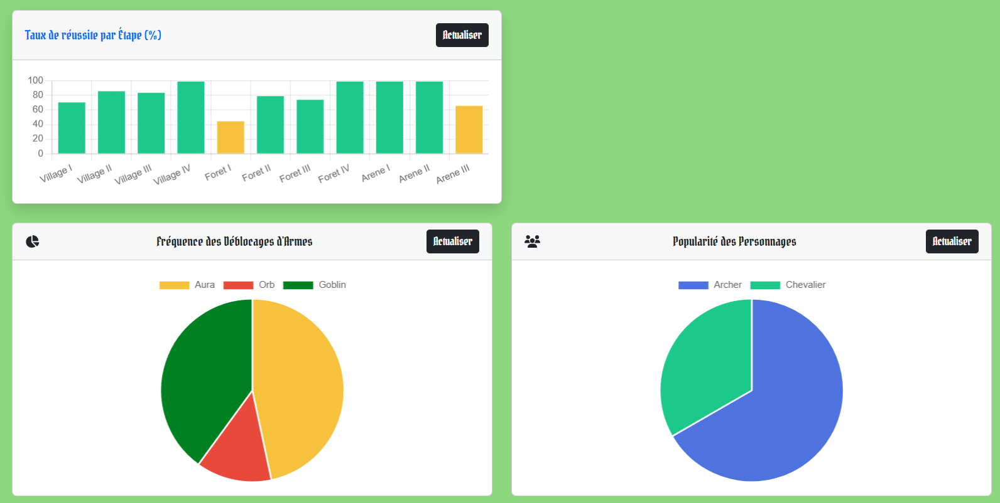

Goblin Attack
À propos du projet
Conception d'un jeu type Vampire Survivors articulé autour de collecte de données en temps réel. En binôme, je me suis chargé de l'aspect Game Design et le développement Unity, ainsi que de la partie dashboard et base de données.
Le dashboard permet d'analyser les métriques de jeu (comportement joueur, équilibrage des vagues). Ce projet a ensuite été installé lors des Journées Portes Ouvertes 2026 afin que les visiteurs puissent le tester.
Le dashboard se mettant à jour en temps réel, les joueurs pouvaient voir directement après leur partie leurs statistiques ainsi que leur classement.





